灘校パソコン研究部
2014年文化祭
第68回灘校文化祭は、
2014年5月2日(金)
、
5月3日(土・祝)
の両日開催です。
今年も灘校パソコン研究部の展示にぜひお越しください。
部誌
2014年部誌ページ数:352 サイズ:12.9MB
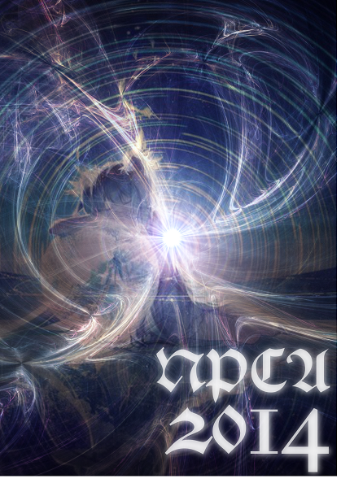目次
ステージ企画
ライブデザイン
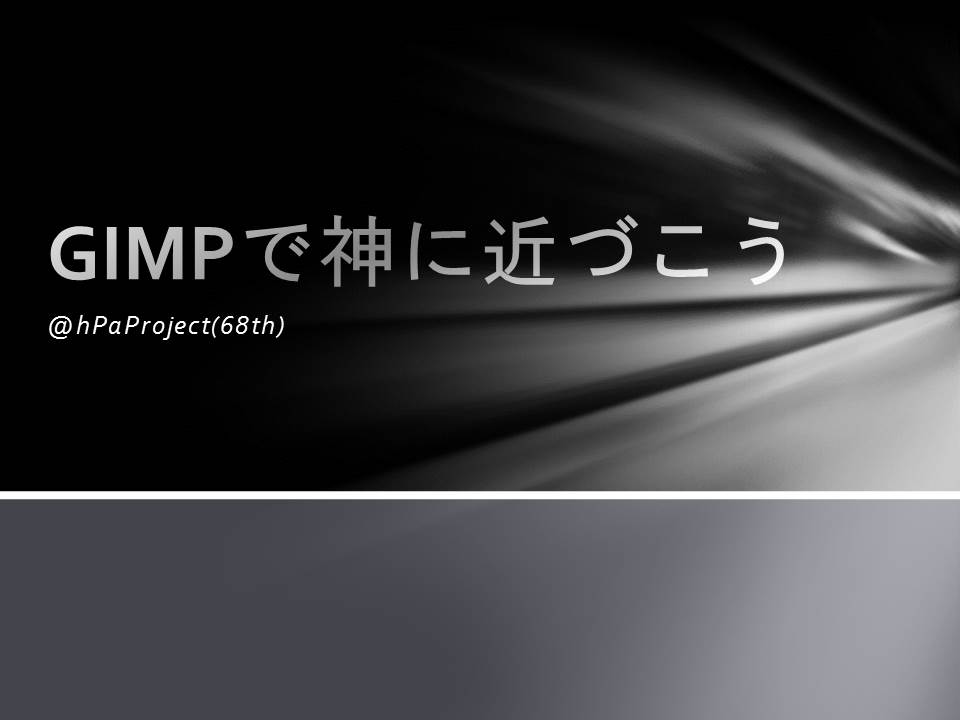これは、GIMPを使って一人の人間(?)が神に近づかんとする物語である――
ハッキング実演
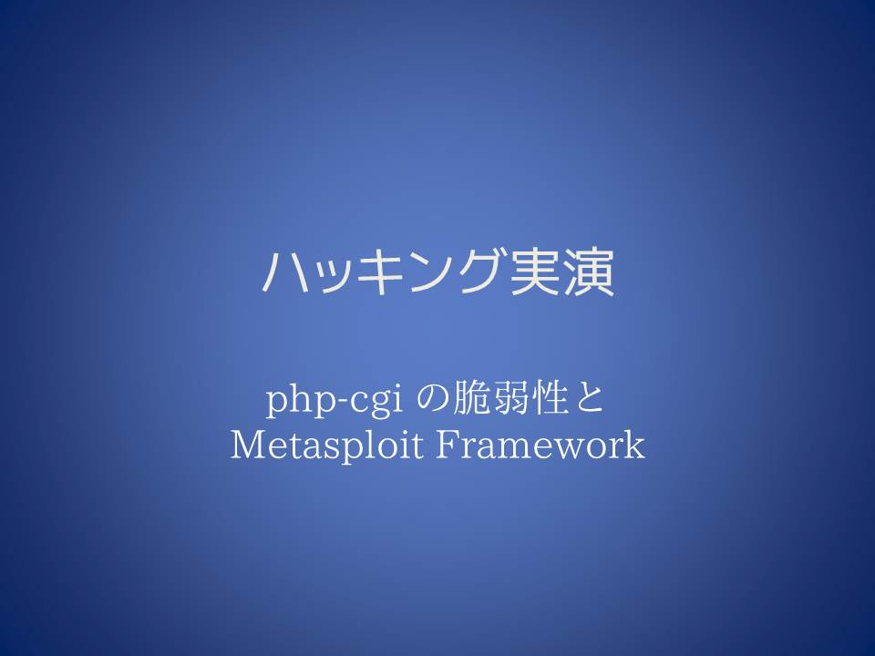例年パソコン研究部の中でも屈指の人気を誇るハッキング実演が今年も開かれます。
今回はいつもの派手な演出は避けました。ハッカーの目線に立って、どのような心理でハッキングが進められていくのかを紹介します。
私達の知らないところで進むハッキングの実態を、冷静に見て行きましょう。
PC解体実演
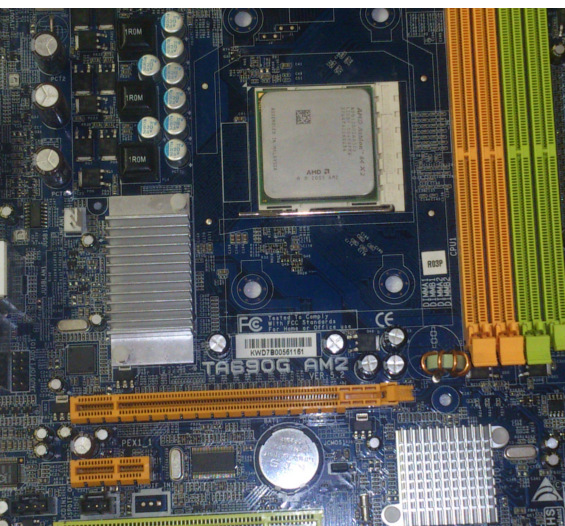古くなったデスクトップPCを解体する企画です。一人が解体をしながら、もう一人がそれぞれのパーツについてわかりやすく説明します。パソコンについてよく知らない方も、PC内部のことが知りたい!という方も、ぜひお越しください。
展示物
ユニークデバイスホッケー
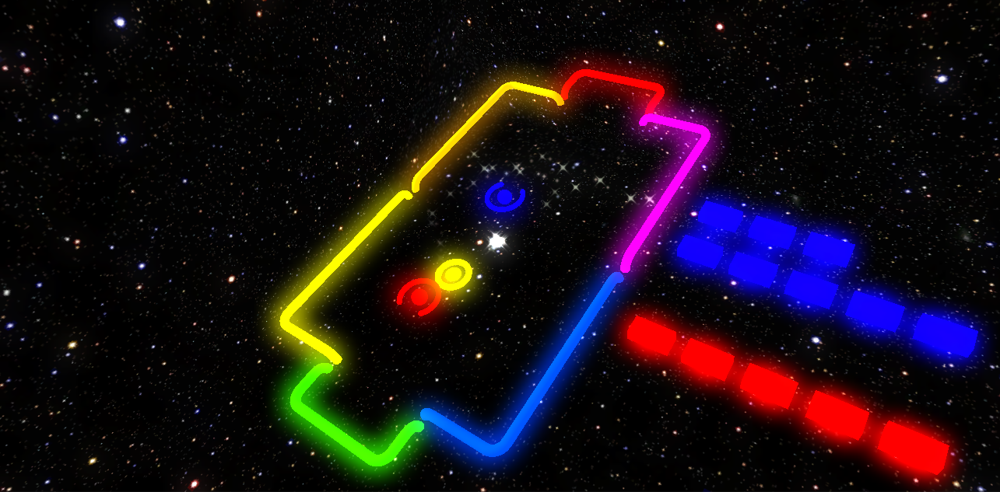ある日せっせと窓拭きをしていたNPCAの部員は、あることを思いつきました。それは、「退屈な窓拭きを、何かゲーム性を加えることで面白くできないか」というもの。これは、そんな奇想天外な思いつきを、Leap motionを用いたホッケーとして現実にしてしまった、そんな展示です。
カーリング
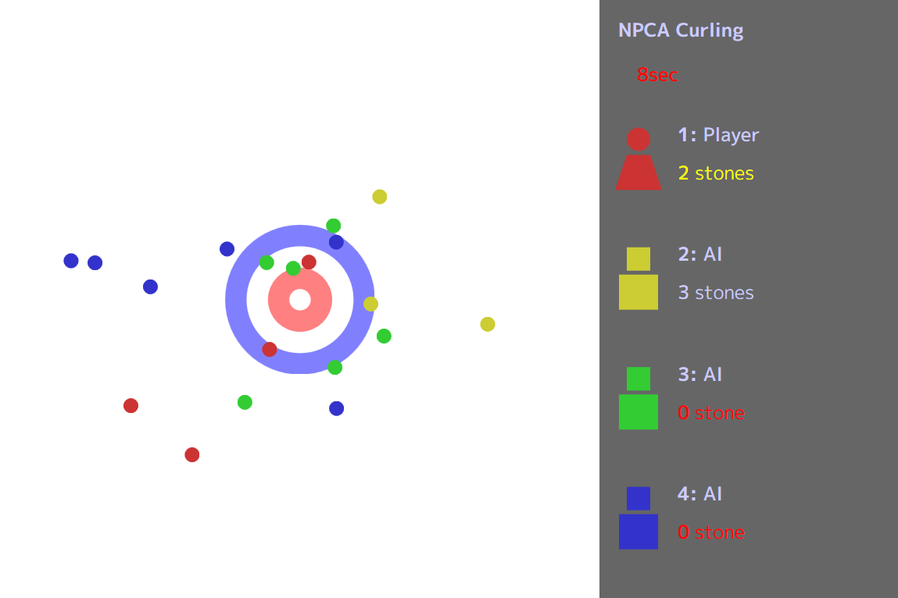カーリソグ（英: curlisog）は画面上で行われるウィンタースポーツ。4人で行われ、目標とする円をめがけて各人が随時、6回ずつ石を画面上に滑らせる。より多くの石を円の中心により近づけた人が高得点を得る。この得点で勝敗を競う。高度な運が必要とされ、そのカオスな試合展開から「画面上のチェヌ」とも呼ばれる。(出典: Wιkιρedιa)
オクターブ・フライヤー
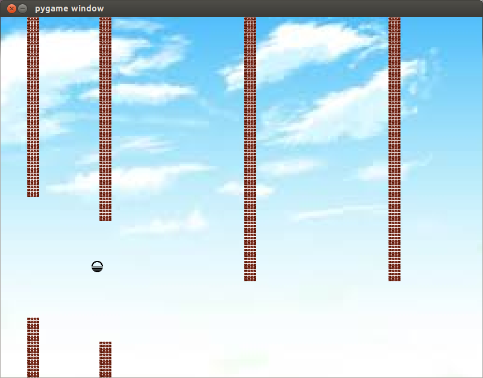某国民的アニメ「ドラ○もん」のある道具からヒントを得て企画されたこの展示。プレイヤーは自身の生来の武器である「声」を存分に使って障害物を避け、ゴールを目指します。
パーツ展示
例年通りコンピュータのパーツの展示を行います。実物の展示に加えポスターでの説明もあります。また、担当者に声をかけていただければ詳しく説明もします。ぜひいらっしゃってください。
ゲーム
PIGS ADVANCE
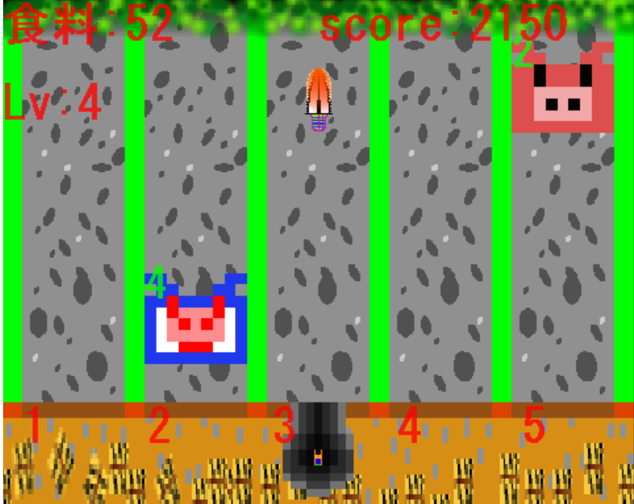えさを求めて迫りくる巨大な豚を大砲で駆逐して食料を得るゲームです。
ダウンロードRideBike
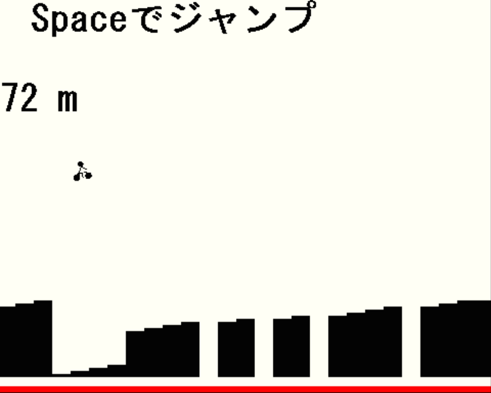自転車でできるだけ遠くまで壁にぶつからずに走るゲーム。
ダウンロードGravity Master
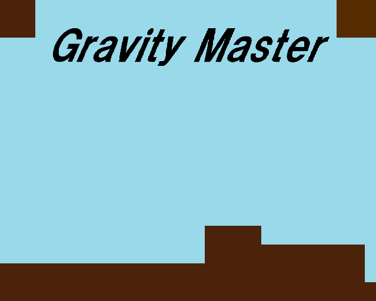重力を自由に操れるプレイヤーをゴールまで導くアクションゲームです。後半のステージはかなり難しくしておりますので、ぜひお楽しみください
ダウンロード量子どうぶつしょうぎ
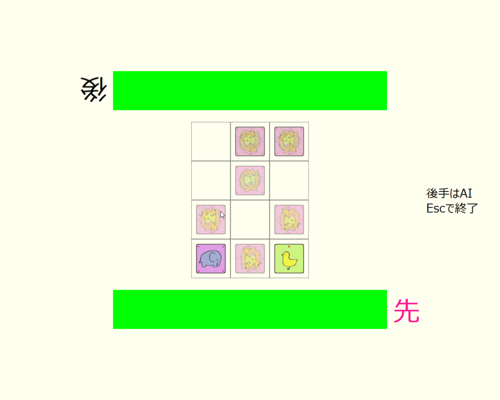量子どうぶつしょうぎは、話題沸騰の「量子将棋」と簡潔で美しい「どうぶつしょうぎ」を組み合わせたゲームです。君はAIに勝てるか？
ダウンロードCarDrive
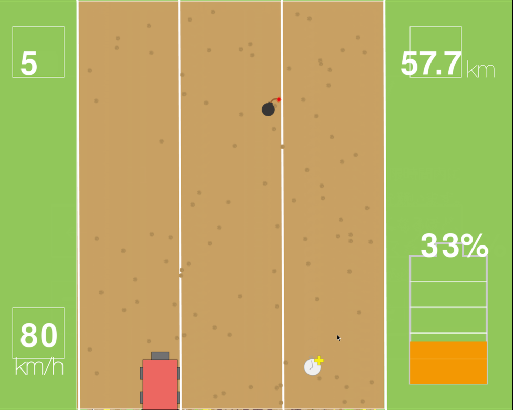電気自動車を動かして、時間内になるべくたくさんの距離を進もう。
ダウンロード